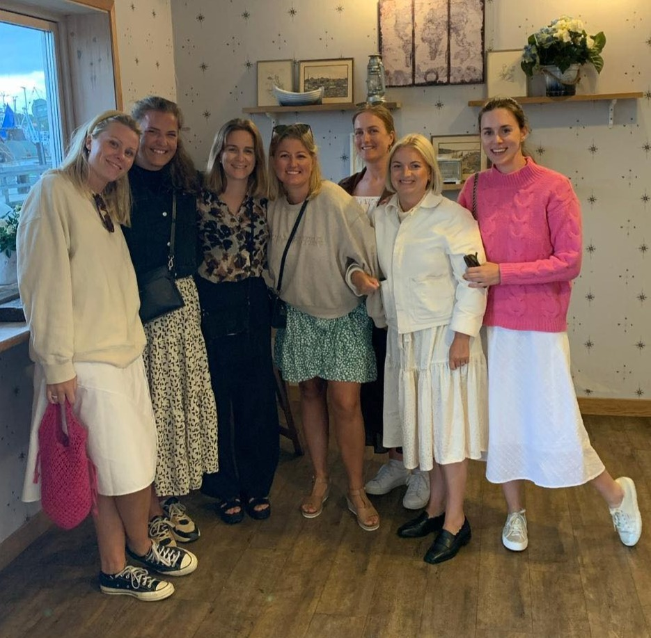
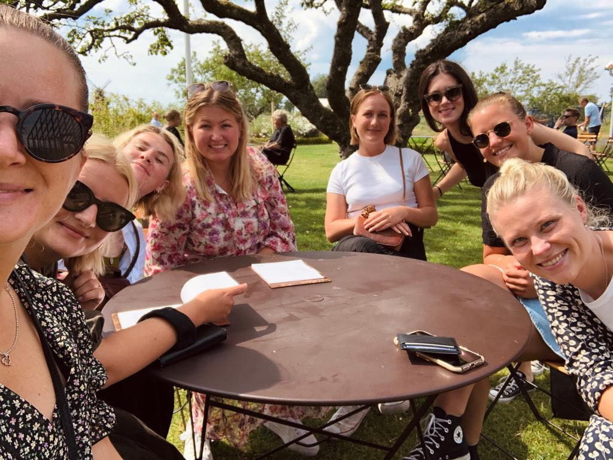
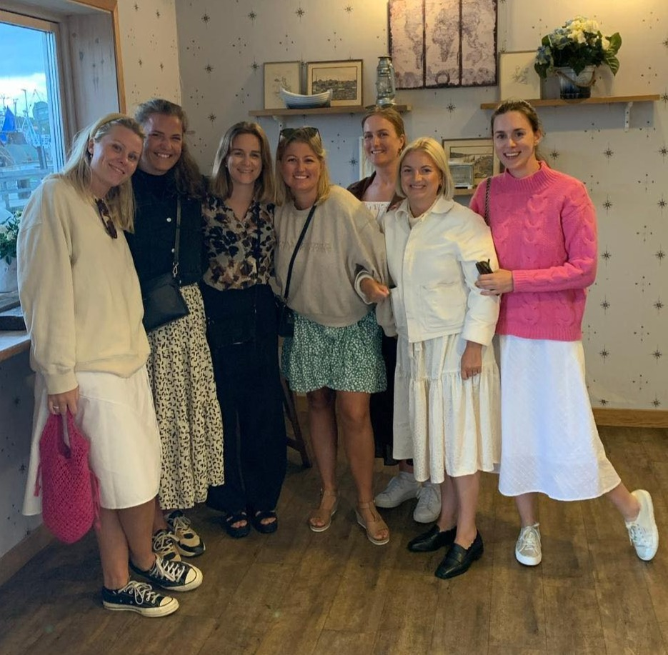
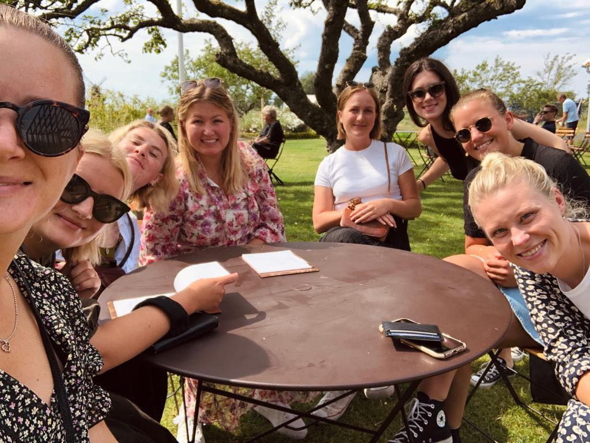

💖 FLUFFIG HELG PÅ KYRKEKVARN! 💖
Gör er redo för en underbar och FLUFFIG helg tillsammans, kära vänner! En resa till idylliska Stallstugan Kyrkekvarn väntar, med två nätter fyllda av skratt, stil, äventyr och massor av härligheter!
📅 Vår Fluffiga Agenda i Maj
Fredag - Välkomstkväll med Stil
Ca kl. 14:00 - Ankomst till Stallstugan Kyrkekvarn. Incheckning och tid att landa.
Eftermiddag - Fri tid att koppla av och göra sig redo för kvällen.
Ca kl. 19:00 - "Fluffig Chic" Tapaskväll! Vi njuter av en utsökt tapasmiddag med goda drinkar och bubblande Prosecco. Kvällens dress code: avslappnat elegant med glada inslag!
Efter middagen - Avkoppling i det sköna bubbelbadet med ett glas Prosecco.
Senare - En smarrig dessert väntar, följt av en avkopplande stund i bastun.
Lördag - Natur och Äventyr
Morgon - En mysig frukost avnjuts på altanen om vädret tillåter, med ljuvligt fågelkvitter som bakgrundsmusik.
Förmiddag/Eftermiddag - Dags för ett spännande äventyr! Vi ger oss ut på en härlig TURRIDNING MED HÄSTAR i den vackra naturen. Gör er redo för en fantastisk upplevelse!
Efter ridturen - Återkomst till Stallstugan och tid för att koppla av.
Kväll - Gemensam och avslappnad middag i boendet. Kvällen fortsätter med mys, spel och trevligt umgänge.
Söndag - Avslutning
Förmiddag - Gemensam frukost och utcheckning.
Ca kl. 11:00 - Hemfärd med många fina minnen från vår fluffiga helg!
💰 Preliminär Budget (per person)
Boende (inkl. bubbelbad & bastu): ca 950 kr (för två nätter)
Mat & dryck: ca 1000 kr (beroende på vad vi äter och dricker)
Turridning med hästar: ca 250 kr (kan variera)
Totalt: ca 2200 kr (ungefärlig kostnad)
Observera att detta är en uppskattning och kan justeras.
Längtar ni också? Spana in Kyrkekvarns hemsida för att se mer av detta underbara ställe!
 



Detta kommer bli så fluffigt och fantastiskt! 💕